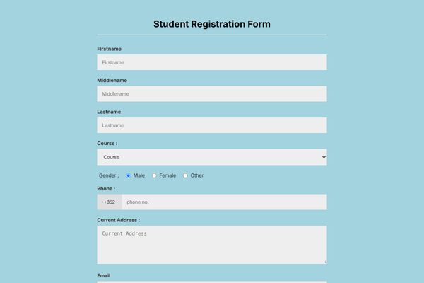
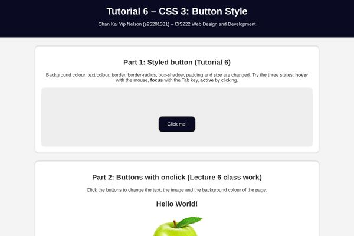
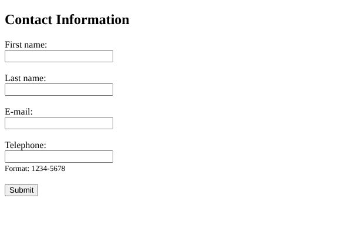

- Demos
- 6 web pages + 7 JavaScript exercises
- Built with
- HTML, CSS and JavaScript
- Course
- CIS222 Web Design and Development
- Editor
- Notepad++
Each project below was a weekly exercise. Together they show how my skills grew: from plain HTML pages, to styled layouts, to forms that check what the user types.
JavaScript exercises
Seven small programs using prompt, if-else, for loops, functions and onclick events.
Q1 Calculator Q2 Sum 1 to n Q3 Age Q4 Leap year Q5a onclick Q5b Colours Q6 DropdownTip: drag the notes and photos below like a real scrapbook.
Layout webpage (Tutorial 3)
A page layout with a banner image, a navigation menu, a self-introduction and a footer, built with div and flexbox.
Open demo
Registration form (Tutorial 4)
A student registration form with text fields, a drop-down menu, radio buttons, phone number and password, styled with my own CSS.
Open demo
TechCorp page (Tutorial 5)
A company home page with a sticky navigation bar, a hero section, a list of services and an account registration form.
Open demo
CSS buttons (Tutorial 6)
Buttons with hover, focus and active states. Click them to change the text, the picture and the background colour.
Open demo
Contact form (Project 6a)
Every field is required, and the e-mail address and telephone number must be in the right format.
Open demo
Passing values (Tutorial 8)
A registration form that checks the e-mail and password, then shows all the data on another page with sessionStorage.
Open demo